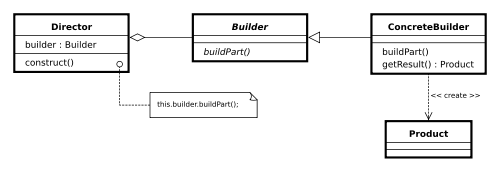
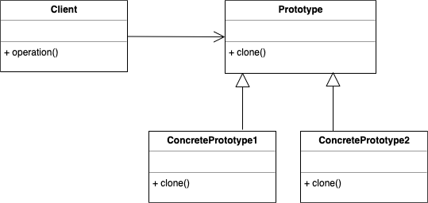
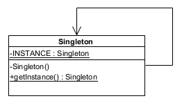

创建型模式概述
创建型模式是处理对象创建的设计模式，试图根据实际情况使用合适的方式创建对象，因为基本的对象创建方式可能会导致设计上的问题，或增加设计的复杂度。创建型模式的关注点是如何创建对象，其核心思想是要把对象的创建和使用相分离。
创建型模式旨在将系统与它的对象创建、结合、表示的方式分离。这些设计模式在对象创建的类型、主体、方式、时间等方面提高了系统的灵活性。
创建型模式由两个主导思想构成：一是将系统使用的具体类封装起来，二是隐藏这些具体类的实例创建的方式。创建型模式又分为对象创建型模式和类创建型模式。对象创建型模式处理对象的创建，类创建型模式处理类的创建。详细地说，对象创建型模式把对象创建的一部分推迟到另一个对象中，而类创建型模式将它对象的创建推迟到子类中。
工厂方法模式（Factory Method Pattern）
模式定义
工厂方法模式是一种实现了“工厂”概念的面向对象设计模式。就像其他创建型模式一样，它也是处理在不指定对象具体类型的情况下创建对象的问题。工厂方法模式的实质是“定义一个创建对象的接口，但让实现这个接口的类来决定实例化哪个类。工厂方法让类的实例化推迟到子类中进行。”
创建一个对象常常需要复杂的过程，所以不适合包含在一个复合对象中。创建对象可能会导致大量的重复代码，可能会需要复合对象访问不到的信息，也可能提供不了足够级别的抽象，还可能并不是复合对象概念的一部分。工厂方法模式通过定义一个单独的创建对象的方法来解决这些问题。由子类实现这个方法来创建具体类型的对象。
对象创建中的有些过程包括决定创建哪个对象、管理对象的生命周期，以及管理特定对象的创建和销毁的概念。
模式结构

代码示例
基于Groovy4的工厂方法模式演示Groovy Web Consoleimport java.util.stream.Collectors;
interface Hamburger {
String getName();
}
class KfcHamburger implements Hamburger {
@Override
String getName() {
return "Kfc Hamburger";
}
}
class McDonaldHamburger implements Hamburger {
@Override
String getName() {
return "McDonald Hamburger";
}
}
abstract class SnackBar {
def packCombo() {
Hamburger hamburger = createHamburger();
def cola = new Object() {
String getName() {
return 'Cola';
}
}
def combo = [];
combo.add(hamburger);
combo.add(cola);
return combo;
}
protected abstract Hamburger createHamburger();
}
class Kfc extends SnackBar {
@Override
Hamburger createHamburger() {
return new KfcHamburger();
}
}
class McDonald extends SnackBar {
@Override
Hamburger createHamburger() {
return new McDonaldHamburger();
}
}
def visitSnackBar(String snackBarName) {
if (!['Kfc', 'McDonald'].contains(snackBarName)) {
throw new IllegalArgumentException("Invalid Snack Bar: ${snackBarName}");
}
SnackBar snackBar = 'Kfc' == snackBarName
? new Kfc()
: new McDonald();
def combo = snackBar.packCombo();
return combo.stream().map(e -> e.getName()).collect(Collectors.toList());
}
def comboItemNames = visitSnackBar('Kfc');
assert ['Kfc Hamburger', 'Cola'] == comboItemNames;
comboItemNames = visitSnackBar('McDonald');
assert ['McDonald Hamburger', 'Cola'] == comboItemNames;
|
适用场景
- 创建对象需要大量重复的代码，可以把这些代码写在工厂基类中；
- 创建对象需要访问某些信息，而这些信息不应该包含在复合类中；
- 创建对象的生命周期必须集中管理，以保证在整个程序中具有一致的行为。 对象创建时会有很多参数来决定如何创建出这个对象；
- 创建对象可能是一个pool里的，不是每次都凭空创建一个新的。而pool的大小等参数可以用另外的逻辑去控制。比如连接池对象，线程池对象；
- 业务对象的代码作者希望隐藏对象的真实类型，而构造函数一定要真实的类名才能用；
- 简化一些常规的创建过程。根据配置去创建一个对象也很复杂；但可能95%的情况只创建某个特定类型的对象。这时可以弄个函数直接省略那些配置过程。如Java的线程池的相关创建api（如Executors.newFixedThreadPool等）；
- 创建一个对象有复杂的依赖关系，比如Foo对象的创建依赖A，A又依赖B，B又依赖C……。于是创建过程是一组对象的的创建和注入；
- 知道怎么创建一个对象，但是无法把控创建的时机。需要把“如何创建”的代码塞给“负责决定什么时候创建”的代码。后者在适当的时机，回调执行创建对象的函数。
- 构造函数里不要抛出异常。
隐喻助记
麦当劳的麦辣鸡腿堡套餐和肯德基的香辣鸡腿堡套餐是两种不同的套餐，但无论去麦当劳或者肯德基，只需向服务员要一份辣味的鸡腿堡套餐，服务员便能准备好相应的套餐。麦当劳和肯德基就是生产鸡腿堡套餐的Factory。
抽象工厂模式（Abstract Factory Pattern）
模式定义
抽象工厂模式是一种软件开发设计模式。抽象工厂模式提供了一种方式，可以将一组具有同一主题的单独的工厂封装起来。在正常使用中，客户端程序需要创建抽象工厂的具体实现，然后使用抽象工厂作为接口来创建这一主题的具体对象。客户端程序不需要知道（或关心）它从这些内部的工厂方法中获得对象的具体类型，因为客户端程序仅使用这些对象的通用接口。抽象工厂模式将一组对象的实现细节与他们的一般使用分离开来。
模式结构

代码示例
基于Groovy4的抽象工厂模式演示Groovy Web Console
interface Wheel {
String getName();
}
class CarWheel implements Wheel {
String getName() {
return "Car Wheel";
}
}
class SuvWheel implements Wheel {
String getName() {
return "SUV Wheel";
}
}
interface Engine {
String getName();
}
class CarEngine implements Engine {
String getName() {
return "Car Engine";
}
}
class SuvEngine implements Engine {
String getName() {
return "SUV Engine";
}
}
interface Factory {
Wheel createWheel();
Engine createEngine();
}
class CarFactory implements Factory {
@Override
Wheel createWheel() {
return new CarWheel();
}
@Override
Engine createEngine() {
return new CarEngine();
}
}
class SuvFactory implements Factory {
@Override
Wheel createWheel() {
return new SuvWheel();
}
@Override
Engine createEngine() {
return new SuvEngine();
}
}
Factory createFactory(String factoryName) {
if (!['Car', 'Suv'].contains(factoryName)) {
throw new IllegalArgumentException("Invalid Factory: ${factoryName}");
}
Factory factory = 'Car' == factoryName
? new CarFactory()
: new SuvFactory();
return factory;
}
Factory carFactory = createFactory('Car');
Wheel carWheel = carFactory.createWheel();
assert 'Car Wheel' == carWheel.getName();
Engine carEngine = carFactory.createEngine();
assert 'Car Engine' == carEngine.getName();
Factory suvFactory = createFactory('Suv');
Wheel suvWheel = suvFactory.createWheel();
assert 'SUV Wheel' == suvWheel.getName();
Engine suvEngine = suvFactory.createEngine();
assert 'SUV Engine' == suvEngine.getName();
|
适用场景
- 一个系统要独立于它的产品的创建、组合和表示时；
- 一个系统要由多个产品系列中的一个来配置时；
- 需要强调一系列相关的产品对象的设计以便进行联合使用时；
- 提供一个产品类库，而只想显示它们的接口而不是实现时。
隐喻助记
汽车工厂需要生产不同型号的汽车，例如轿车、SUV和卡车。每种汽车都有不同的特点和功能，例如轿车注重舒适性和燃油效率，SUV注重越野性能和空间。为了生产这些不同的汽车，汽车工厂需要使用抽象工厂模式。
在汽车工厂中，抽象工厂定义了一系列的接口，例如生产车轮、引擎的接口。每个具体的汽车类型都有自己的具体工厂，这些具体工厂实现了抽象工厂中定义的接口。例如，轿车工厂会实现轿车车轮和轿车引擎的接口；SUV工厂会实现SUV车轮和SUV引擎的接口。
通过使用抽象工厂模式，汽车工厂可以生产多种不同类型的汽车，而不需要关心每个具体汽车的细节实现。例如，生产轿车时，工厂只需要调用轿车工厂中的接口来获取轿车车轮和引擎，而不需要关心车轮和引擎是如何生产的。同样地，生产SUV时，工厂也只需要调用相应工厂的接口来获取所需部件。
建造者模式（Builder Pattern）
模式定义
建造者模式，又名生成器模式，是一种对象构建模式。它可以将复杂对象的建造过程抽象出来（抽象类别），使这个抽象过程的不同实现方法可以构造出不同表现（属性）的对象。
模式结构

代码示例
基于Groovy4的建造者模式演示Groovy Web Console
class Computer {
private int coreNumber;
Computer(int coreNumber) {
this.coreNumber = coreNumber;
}
int getCoreNumber() {
return coreNumber
}
}
class Engine {
private int volume;
Engine(int volume) {
this.volume = volume;
}
int getVolume() {
return volume
}
}
interface Vehicle {
Computer getComputer();
Engine getEngine();
}
class Car implements Vehicle {
private Computer computer;
private Engine engine;
Car(Computer computer, Engine engine) {
this.computer = computer;
this.engine = engine;
}
@Override
Computer getComputer() {
return computer;
}
@Override
Engine getEngine() {
return engine;
}
}
class Suv implements Vehicle {
private Computer computer;
private Engine engine;
Suv(Computer computer, Engine engine) {
this.computer = computer;
this.engine = engine;
}
@Override
Computer getComputer() {
return computer;
}
@Override
Engine getEngine() {
return engine;
}
}
interface Builder {
void setComputer(Computer computer);
void setEngine(Engine engine);
Vehicle build();
}
class CarBuilder implements Builder {
private Computer computer;
private Engine engine;
@Override
void setComputer(Computer computer) {
this.computer = computer;
}
@Override
void setEngine(Engine engine) {
this.engine = engine;
}
@Override
Car build() {
return new Car(computer, engine);
}
}
class SuvBuilder implements Builder {
private Computer computer;
private Engine engine;
@Override
void setComputer(Computer computer) {
this.computer = computer;
}
@Override
void setEngine(Engine engine) {
this.engine = engine;
}
@Override
Suv build() {
return new Suv(computer, engine);
}
}
class Director {
void constructHighEnd(Builder builder) {
builder.setComputer(new Computer(4));
builder.setEngine(new Engine(3));
}
void constructLowEnd(Builder builder) {
builder.setComputer(new Computer(1));
builder.setEngine(new Engine(2));
}
}
Director director = new Director();
Builder carBuilder = new CarBuilder();
director.constructHighEnd(carBuilder);
Vehicle highEndCar = carBuilder.build();
assert highEndCar instanceof Car;
assert 4 == highEndCar.computer.coreNumber;
assert 3 == highEndCar.engine.volume;
carBuilder = new CarBuilder();
director.constructLowEnd(carBuilder);
Vehicle lowEndCar = carBuilder.build();
assert lowEndCar instanceof Car;
assert 1 == lowEndCar.computer.coreNumber;
assert 2 == lowEndCar.engine.volume;
Builder suvBuilder = new SuvBuilder();
director.constructHighEnd(suvBuilder);
Vehicle highEndSuv = suvBuilder.build();
assert highEndSuv instanceof Suv;
assert 4 == highEndSuv.computer.coreNumber;
assert 3 == highEndSuv.engine.volume;
suvBuilder = new SuvBuilder();
director.constructLowEnd(suvBuilder);
Vehicle lowEndSuv = suvBuilder.build();
assert lowEndSuv instanceof Suv;
assert 1 == lowEndSuv.computer.coreNumber;
assert 2 == lowEndSuv.engine.volume;
|
适用场景
- 当创建复杂对象的算法应该独立于该对象的组成部分以及它们的装配方式时；
- 当构造过程必须允许被构造的对象有不同的表示时。
隐喻助记
在建造车辆时，我们可以将车辆的构建过程分解为几个步骤：①选择中控电脑；②选择发动机类型。另外，还可以设定所建造的车辆配置，比如高端或低端。这样便可灵活地构建不同类型的车辆。
原型模式（Prototype Pattern）
模式定义
原型模式是创建型模式的一种，其特点在于通过“复制”一个已经存在的实例来返回新的实例，而不是新建实例。被复制的实例就是我们所称的“原型”，这个原型是可定制的。
原型模式多用于创建复杂的或者耗时的实例，因为这种情况下，复制一个已经存在的实例使程序运行更高效；或者创建值相等，只是命名不一样的同类数据。
模式结构

代码示例
基于Groovy4的原型模式演示Groovy Web Console
class Key implements Cloneable {
private int size;
Key(int size) {
this.size = size;
}
int getSize() {
return size;
}
void setSize(int size) {
this.size = size;
}
@Override
Key clone() {
try {
return (Key) super.clone();
} catch (Exception e) {
throw new RuntimeException("Failed to clone " + this, e);
}
}
}
Key key = new Key(10);
Key clonedKey = key.clone();
assert clonedKey.getSize() == key.getSize();
|
适用场景
- 如果需要复制一些对象， 同时又希望代码独立于这些对象所属的具体类；
- 如果子类的区别仅在于其对象的初始化方式， 那么可以使用原型模式来减少子类的数量。
隐喻助记
当需要制作一把新的钥匙时，可以将现有的钥匙放在一个复制机中，机器会扫描钥匙的形状和结构，并在新的钥匙上生成相同的形状和结构。这样，就可以得到一把与原始钥匙完全相同的新钥匙，而不必手动测量和复制。
在这个例子中，现有的钥匙就是原型，复制机就是应用原型模式的代码。通过复制现有的钥匙，我们可以避免手动复制的复杂性和错误，并快速创建一个与原始钥匙完全相同的新钥匙。同样地，通过原型模式，我们可以避免手动创建对象的复杂性和错误，并快速创建一个与原始对象完全相同的新对象。
单例模式（Singleton Pattern）
模式定义
单例模式，也叫单子模式，是一种常用的软件设计模式，属于创建型模式的一种。在应用这个模式时，单例对象的类必须保证只有一个实例存在，并提供全局访问点来访问这个实例。许多时候整个系统只需要拥有一个的全局对象，这样有利于我们协调系统整体的行为。
模式结构

代码示例
基于Groovy4的单例模式演示Groovy Web Console
class EagerSingleton {
private static final EagerSingleton INSTANCE = new EagerSingleton();
private EagerSingleton() {};
static EagerSingleton getInstance() {
return INSTANCE;
}
}
class LazySingleton {
private static class SingletonHolder {
private static final LazySingleton SINGLETON_INSTANCE = new LazySingleton();
}
private LazySingleton() {};
static LazySingleton getInstance() {
return SingletonHolder.SINGLETON_INSTANCE;
}
}
EagerSingleton eagerSingleton = EagerSingleton.getInstance();
assert eagerSingleton === EagerSingleton.getInstance();
LazySingleton lazySingleton = LazySingleton.getInstance();
assert lazySingleton === LazySingleton.getInstance();
|
适用场景
- 程序中的某个类对于所有客户端只有一个可用的实例；
- 需要更加严格地控制全局变量。
隐喻助记
假设有一个餐厅，这个餐厅只有一个厨师，为了确保只有一个厨师在餐厅工作，可以使用单例模式来实现。这样，无论餐厅中有多少个服务员、顾客，都只会有一个厨师在工作，而不会出现多个厨师在同时烹饪菜肴的情况。
在这个例子中，厨师就是单例类，只有一个实例存在于系统中。每当服务员需要将订单送到厨师那里时，他们可以直接访问单例实例来获取菜单并将订单传递给厨师。由于只有一个实例存在，服务员可以放心地传递订单，而不用担心订单会被多个厨师处理。
参考资料
- Software Design Pattern from Wikipedia
- Software Design Pattern from Refactoring Guru